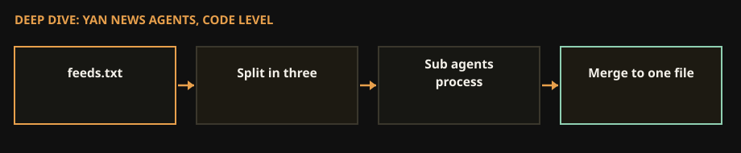

Deep Dive: Yan News Agents, Code Level
A full multi agent build with code: one main agent, three tmux sub agents, FastMCP tools per feed, and a merge step. Source: Eugene Yan, Building News Agents, May 2025, read in full with code. Confidence: High.

Architecture
Main Agent (main tmux pane) reads feeds.txt splits feeds into 3 chunks spawns Sub Agent 1, 2, 3 (one tmux pane each) each sub agent: process chunk, write summaries, report done Main Agent merges all summaries into main-summary.md Stack: Amazon Q CLI as the agent frame, MCP tools for feeds, tmux for spawn and display.
Feed tool pattern
Each feed gets one tool: fetch, parse, format. Fetch uses an async HTTP client with a 10 second timeout and a user agent header. Errors return as strings, never as raised exceptions, so the agent reads the failure and acts. Parse turns RSS XML into title, link, description, and date dicts.
Python pattern, rebuilt from the code shown in the post:
mcp = FastMCP("news-mcp")
@mcp.tool()
async def get_hackernews_stories(
feed_url: str = DEFAULT_HN_RSS_URL, count: int = 30
) -> str:
xml = await fetch(feed_url) # httpx, 10s timeout
items = parse_rss(xml) # title, link, desc, date
picked = items[:count]
return "\n---\n".join(format_item(i) for i in picked)
Tool names as listed in the session:
news_mcp___get_wired_stories
news_mcp___get_techcrunch_stories
news_mcp___get_wallstreetjournal_stories
news_mcp___get_hackernews_stories
news_mcp___get_ainews_latest
Instruction files
Two context files steer the system. The main agent file names the role (primary coordinating agent), the input (feeds.txt), the sub agent instruction file to hand out, and the output form (the main summary template). The sub agent file names its role (specialized processing agent), the work rule (finish one feed in full before the next), the output folder (summaries/, made in advance), the return form (the sub summary template), and the category set: AI and ML, technology, business, and more.
Task assignment, verbatim form
You are Agent [NUMBER]. Read the instructions at /context/sub-agent.md and execute it. Here are the feeds to process: [FEEDS]
Run commands, verbatim
git clone https://github.com/eugeneyan/news-agents.git uv sync q chat --trust-all-tools /context add --global context/agents.md Prompt: Q, read context/main-agent.md and spin up sub agents to execute it.
Feeds and one real output
feeds.txt holds six feeds: Hacker News, WSJ Tech, WSJ Markets, TechCrunch, AI News, Wired. The sample run in the post: 124 items, 6 sources, 42 categories, AI and ML at 31 items, 25 percent. Small numbers, full loop: split, parallel process, merge, one file out.
Apply this to your work
This is the exact shape for your event radar and wife search digests, with feeds swapped for your source lanes. One main agent holds the dedupe and ranking rules, sub agents take source chunks in parallel, each returns in one template, and the main agent merges into one brief. Your lanes already run this way by hand through crons. The gain here is the file discipline: one instruction file per role, one template per return, and errors as text the agent can read, so a failed lane reports in the merge in place of a silent gap.
Replication checklist
- Clone the repo and run the demo once, end to end, before you adapt it.
- Write your two instruction files before you write any tool code.
- Rule for your tools: errors return as strings. No raised exceptions across the agent boundary.
- Pre make the output folder. Agents fail on missing folders in silence.
Prompt file: prompts/doc-swarm.md holds the swarm form for document work.
Visual map of this page
Two views of one page: a Mermaid flow for work order, rendered by the local Mermaid library in this folder, and a markmap for concept groups.
Mermaid source, for offline read
flowchart TD A[Main agent reads feeds.txt] --> B[Chunk 1] A --> C[Chunk 2] A --> D[Chunk 3] B --> E[Part files] C --> E D --> E E --> F[main-summary.md]
How to read the flow diagram. Step 1: start at the first box. Step 2: follow each arrow to the next stage. Step 3: at a branch box, read both paths before a choice. Step 4: a loop arrow means work returns for one more pass vs a test.
Markmap: concepts on this page
- Deep Dive: Yan News Agents, Code Level
- Tools
- FastMCP per feed
- Errors as strings
- 10 second timeout
- Files
- Main instructions
- Sub instructions
- Two templates
- Run
- 124 items
- 42 categories
- Tools